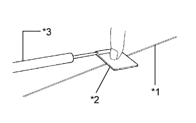
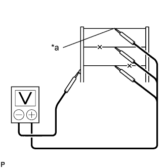
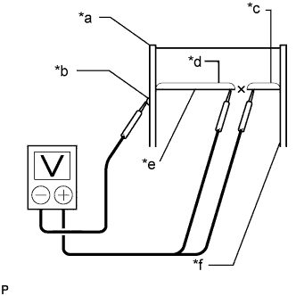

WINDOW DEFOGGER WIRE > ON-VEHICLE INSPECTION |
| 1. INSPECT BACK WINDOW GLASS (DEFOGGER WIRE) |
|  |
| *1 | Defogger Wire |
| *2 | Tin Foil |
| *3 | Tester Probe |
Turn the engine switch on (IG).
Turn the defogger switch on.
|   |
Measure the voltage at the center of each defogger wire as shown in the illustration.
| Voltage | Criteria |
| Approx. 5 V | Wire is not broken |
| Approx. 10 or 0 V | Wire is broken |
| *a | Center |
Place the voltmeter positive (+) lead against the defogger wire on the battery side.
Place the voltmeter negative (-) lead with the foil strip against the wire on the ground side.
Slide the positive (+) lead from the battery side to the ground side.
The point where the voltage drops from approximately 10 V to 0 V is where the defogger wire is broken.
| *a | Ground Side |
| *b | Foil Strip |
| *c | Approximately 10 V |
| *d | 0 V |
| *e | Broken Wire |
| *f | Battery Side |